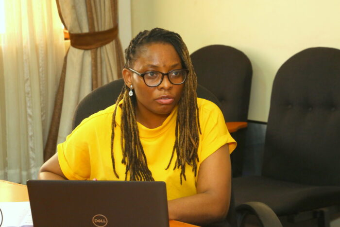
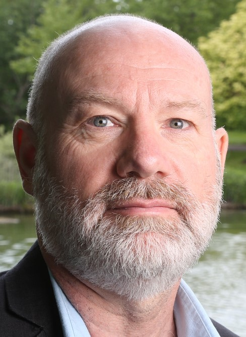
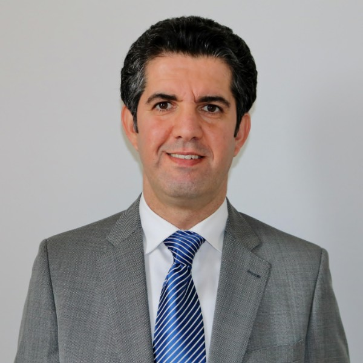
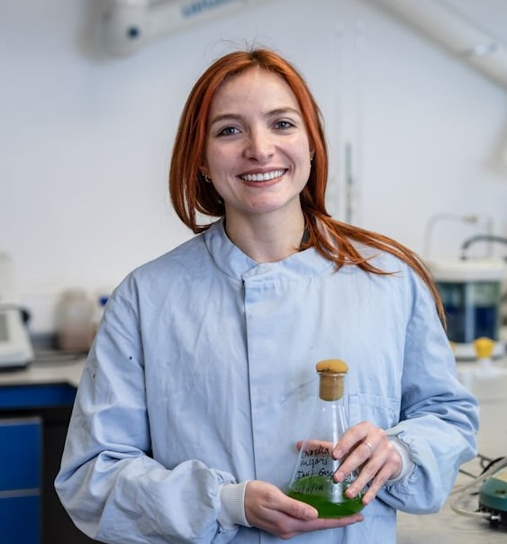

How our themes collaborate
Who actually writes with whom. Each line is co-authorship between two of our four research themes, counted from our research outputs for 2018 to 2025 and including our doctoral researchers, who are placed with their supervisor. The thin connections matter as much as the thick ones: they are where a cross-theme collaboration is only just beginning.
Dr. Marco-Felipe King
Research focuses on particulate matter dynamics in indoor environments and their health impacts.
View Profile
Dr. Cynthia Okoro-Shekwaga
Specialises in biological waste treatment processes and resource recovery from waste streams.
View ProfileDr. Amirul Khan
Researches modelling airflows in and around buildings using CFD.
View ProfileProf. Catherine Noakes OBE
Research on airborne infection risk, ventilation effectiveness and the engineering of healthy indoor environments.
View Profile
Prof. Jamie Bartram
Former Director of the WHO Collaborating Centre for Water and Health; internationally recognised leader in water, sanitation and hygiene.
View ProfileProf. Martin Tillotson
Research on water and wastewater treatment, sludge processing, resource recovery and water industry regulation. Co-Director of the WaterWISER CDT.
View Profile
Dr. Mohsen Besharat
Research focuses numerical modelling of hydraulics and waterflows.
View ProfileDr. Douglas Booker
Research on air quality, environmental justice and the social dimensions of indoor and outdoor pollution.
View ProfileDr. Maryam Asachi
Water and environmental engineering research.
View ProfileDr. Akintunde Babatunde
Research in constructed wetlands and sustainable water treatment systems.
View ProfileDr. Dani Barrington
Research on water, sanitation and hygiene in low- and middle-income country contexts.
View ProfileDr. Shashank Bettadapura Subramanyam
Research in geotechnical engineering and ground–water interactions.
View ProfileDr. Duncan Borman
Computational fluid dynamics applied to indoor and outdoor airflow environments.
View ProfileDr. Miller Alonso Camargo-Valero
Research on nutrient recovery, bioenergy and circular economy approaches to waste treatment.
View ProfileDr. Xiaohui Chen
Research in water quality, contaminant transport and water treatment processes.
View ProfileProf. Barbara Evans
Research on sanitation, hygiene and public health engineering in global development contexts.
View ProfileDr. Louise Fletcher
Research in environmental engineering with a focus on water quality and public health outcomes.
View ProfileProf. John Forth
Research in concrete engineering and structural performance in civil infrastructure.
View ProfileDr. Ana Heitor
Research in geotechnical engineering, ground improvement and unsaturated soils.
View ProfileDr. Paul Hutchings
Research on water, sanitation and hygiene access, governance and behaviour change.
View ProfileKris Moodley
Teaching and scholarship in civil and environmental engineering.
View ProfileProf. Andy Sleigh
Research in computational hydraulics and water engineering.
View ProfileProf. Doug Stewart
Research in environmental geochemistry, contaminant fate and transport in the subsurface.
View ProfileProf. Mark Trigg
Research on flood risk, global water hazards and hydrological modelling.
View ProfileDr. Waseem Hiwar
Airborne infection science in the aerobiology chamber.
View ProfileDr. Mark Tarn
Single-particle bioaerosol detection on lab-on-a-chip devices.
View ProfileDr. Sally Shahzad
Building physics, thermal comfort and low-carbon ventilation.
View ProfileRuth Sylvester
Works across the sanitation service chain and the institutions that sustain it.
View ProfileClaire Grisaffi
Regulation of faecal sludge emptying and transport services.
View ProfileDr. Anne Velenturf
Circular economy, from offshore wind to the foundation industries.
View ProfileProf. Paul Eke
Water engineer working on hydrocarbon removal with constructed wetlands, and on applying artificial neural networks to optimise and manage them.
View ProfileDr. Zhe Zhan
Climate resilience of on-site sanitation: how floodwater interacts with pit latrines and septic tanks, combining field sampling in India and Uganda with CFD modelling.
View ProfileDr. Ed Cook

Jack Dalton
Investigating the effects of ventilation systems on airborne pathogen transmission in healthcare settings.
View Profile
Gettie Shiinda
Researching microbial communities in anaerobic digesters for optimal biogas production.
View Profile
Anushi Khandare
Studying the relationship between urban green spaces and respiratory health outcomes in children.
View Profile
Dr. Tatiana Zúñiga
Developed low-cost sanitation technologies for emergency response situations.
View ProfileDr. Jemma Phillips
Researched exposure to enteric pathogens through food and water in India.
View ProfileXiaoxuan Qin
Exposure to SARS-2 on public transport via surface contacts.
View ProfileDr. Franja Prosenc
Research and teaching in bioresource systems, focusing on sustainable waste treatment and resource recovery.
View ProfileJohan Pasos-Panqueva
Research on bioresource recovery and sustainable waste treatment systems.
View ProfileDr. David Elliott
Oversees laboratory operations, equipment maintenance, and technical support across WPE research groups.
View Profile